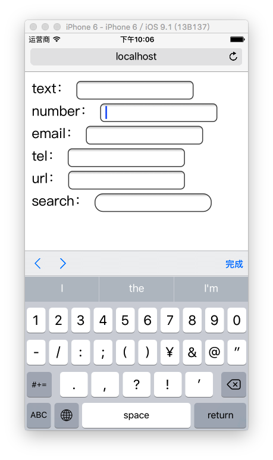
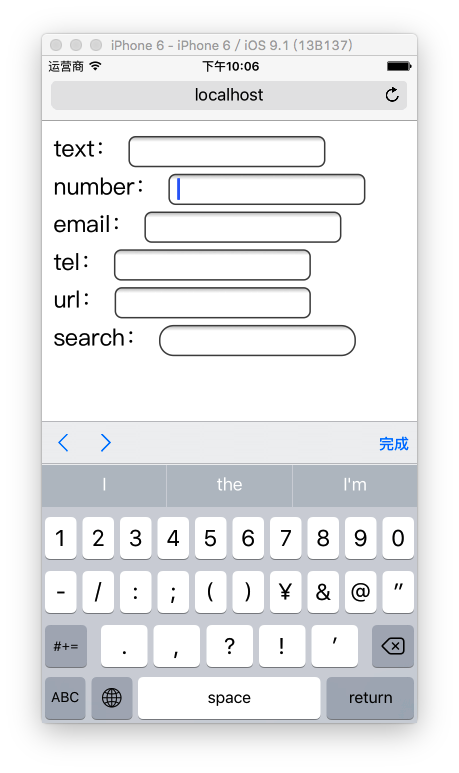
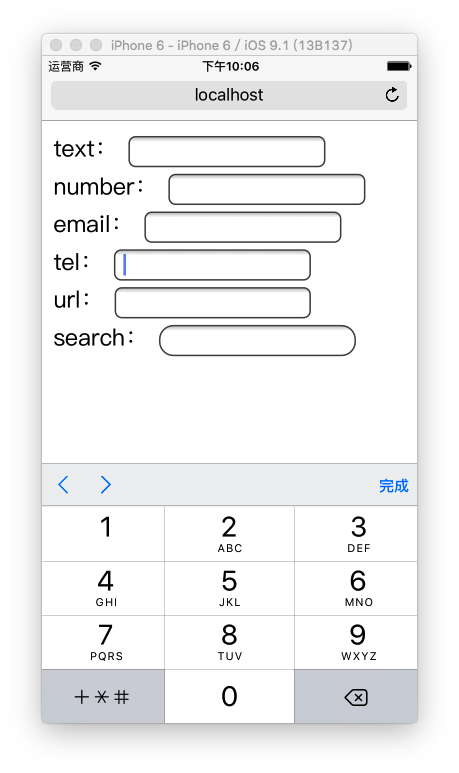
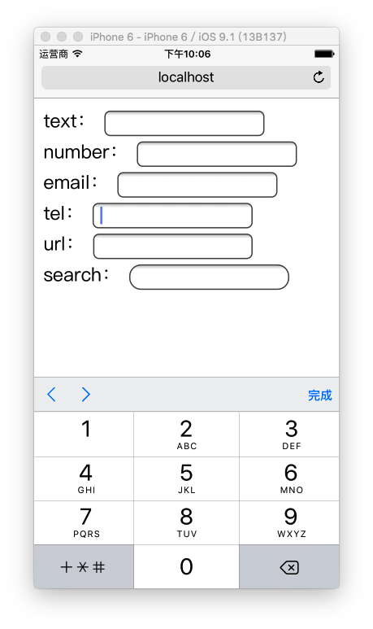

HTML5
讲师：汪磊
概述
HTML5 ?
Web Development to the next level
Web 技术发展时间线
- 1991 HTML
- 1994 HTML2
- 1996 CSS1 + JavaScript
- 1997 HTML4
- 1998 CSS2
- 2000 XHTML1
- 2002 Tableless Web Design
- 2005 AJAX
- 2009 HTML5
- 2014 HTML5 Finalized
Review of HTML
什么是HTML？
Hyper Text Markup Language
什么是超文本标记？
用标记表示比普通文本牛X一点的文本
e.g.
<!DOCTYPE html>
<html lang="en">
<head>
<meta charset="UTF-8">
<title>标题</title>
</head>
<body>
<h1>我是标题</h1>
<h2>我是副标题</h2>
<p>我叫<strong>汪磊</strong>，我在学习HTML5</p>
</body>
</html>
SO ~
HTML5是用来表示更NB一点的文本 ？
NO ！！！
这个仅仅可以理解为H5的狭义概念
What is HTML5
H5草案前身
Web Application
提出 by WHATWG @2004
接纳 by W3C @2007
发布HTML5第一个草案 by W3C @2008-01-22
HTML5 ≠ HTML next version
What is HTML5
HTML5 ≈ HTML↑ + CSS↑ + JavaScript API↑
广义上：新一代开发Web富客户端应用程序整体解决方案
Structure → Style → Interactive
全包了！！！
What is Rich Client
指具有很强交互性和体验的客户端程序
十年之前

just for 内容，没有交互
想要交互、绚丽的效果
Flash
e.g. Moodstream、 Waterlife、 monoface、 etc.
被封杀 and 孤芳自赏
link: 关于H5和Flash
When HTML5

让Web开发重新回归富客户端的时代
HTML5 的应用场景
-
极具表现力的网页
- 案例非常多
-
网页应用程序
- PC端：iCloud、百度脑图、Office 365···
- APP端：淘宝、京东、美团···
- WeChat端：淘宝、京东、美团···
-
混合式本地应用
- PC端：网易云音乐、有道词典···
- APP端：淘宝、京东、美团···
- 简单的游戏
HTML5 到底多了点啥？
我个人将这些变化大体分为三类：
- HTML
- JavaScript
- CSS
HTML
-
标签
- 更语义化标签
- 应用程序标签
- 属性
- 链接关系描述
- 结构数据标记
- ARIA
- 自定义属性
-
智能表单
- 新的表单类型
- 虚拟键盘适配
-
网页多媒体
- 音频
- 视频
- 字幕
-
Canvas
- 2D
- 3D (WebGL)
- SVG
JavaScript API
-
核心平台提升
- 新的选择器
- Element.classList
- 访问历史API
- 全屏API
-
网页存储
- Application Cache
- localStorage
- sessionStorage
- WebSQL
- IndexedDB
-
设备信息访问
- 网络状态
- 硬件访问
- 设备方向
- 地理围栏
-
拖放操作
- 网页内拖放
- 桌面拖入
- 桌面拖出
-
文件
- 文件系统API
- FileReader
-
网络访问
- XMLHttpRequest
- fetch
- WebSocket
- 多线程
- 桌面通知
CSS
- New Selector
- Web Fonts
- Text Styles
- Opacity
- HSL Color
- Rounded Corners
- Gradients
- Shadows
- Background Enhancements
- Border Image
- Flexible Box Model
- Transforms
- Transitions
- Animations
- etc. 后面详细讨论
干货来了
HTML
标签
更具有语义化的标签
就让HTML代码符合内容的结构化，标签语义化
以前我们可能是这样的：

以后我们一定是这样的：
为什么要有语义化标签
能够便于开发者阅读和写出更优雅的代码，代码如诗
同时让浏览器或是网络爬虫可以很好地解析，从而更好分析其中的内容
更好地搜索引擎优化
切记
- HTML的职责是描述一块内容是什么（或其意义）
- 而不是它长的什么样子，它的外观应该由CSS来决定。
应用程序标签
- DataList(数据列表)
- Progress(进度条)
- Meter(数值显示器)
-
Menu(右键菜单) -
Details(明细) - View Demo
语义化标签 学习目标
- 掌握语义化标签的重要性
- 可以正确使用语义化标签
属性
链接关系
rel
<link rel="stylesheet" href="style.css">
<link rel="alternate" type="application/rss+xml" href="http://myblog.com/feed">
<link rel="shortcut icon" href="favicon.ico">
<link rel="pingback" href="http://myblog.com/xmlrpc.php">
<link rel="prefetch" href="http://myblog.com/main.php">
...
<a rel="archives" href="http://myblog.com/archives">old posts</a>
<a rel="external" href="http://notmysite.com">tutorial</a>
<a rel="license" href="http://www.apache.org/licenses/LICENSE-2.0">license</a>
<a rel="nofollow" href="http://notmysite.com/sample">wannabe</a>
<a rel="tag" href="http://myblog.com/category/games">games posts</a>
...
用来描述指定链接与当前文档的关系，便于机器理解文档结构
常见的链接关系表
| alternate | 文档的可选版本（例如打印页、翻译页或镜像） |
| stylesheet | 文档的外部样式表 |
| start | 集合中的第一个文档 |
| next | 集合中的下一个文档 |
| prev | 集合中的前一个文档 |
| contents | 文档目录 |
| index | 文档索引 |
| glossary | 文档中所用字词的术语表或解释 |
| copyright | 包含版权信息的文档 |
| chapter | 文档的章 |
| section | 文档的节 |
| subsection | 文档的子段 |
| appendix | 文档附录 |
| help | 帮助文档 |
| bookmark | 相关文档 |
| nofollow | 用于指定 Google 搜索引擎不要跟踪链接 |
| licence | 一般用于文献，表示许可证的含义 |
| tag | 标签集合 |
| friend | 友情链接 |
结构数据标记 *
<div itemscope itemtype="http://example.com/hello">
<p>我叫<span itemprop="主人">汪磊</span>。</p>
<p>
我养了一条叫
<span itemprop="狗名">旺财</span>的
<span itemprop="品种">金毛</span>犬。
</p>
</div>
很高级的东西，只有Google支持
ARIA 属性 *
Accessible Rich Internet Application (无障碍富互联网应用程序)
主要针对于屏幕阅读设备(e.g. NVDA)，更快更好地理解网页
不仅仅是为了盲人用户，更多语义化
自定义属性 data-*
通过DOM存储与DOM对象强相关的数据
<ul id="users">
<li data-id="1" data-age="18" data-gender="true">张三</li>
<li data-id="2" data-age="18" data-gender="false">李四</li>
<li data-id="3" data-age="18" data-gender="true">王二</li>
</ul>
新属性 学习目标
- 了解而已，以后在国内普及开过后，迅速上手
智能表单
新的表单类型
<input type="text" required>
<input type="email" value="some@email.com">
<input type="date" min="2010-08-14" max="2011-08-14" value="2010-08-14">
<input type="range" min="0" max="50" value="10">
<input type="search" results="10" placeholder="Search...">
<input type="tel" placeholder="(555) 555-5555"
pattern="^\(?\d{3}\)?[-\s]\d{3}[-\s]\d{4}.*?$">
<input type="color" placeholder="e.g. #bbbbbb">
<input type="number" step="1" min="-5" max="10" value="0">
虚拟键盘适配
<input type="text" name="txt_text" id="txt_text">
<input type="number" name="txt_number" id="txt_number">
<input type="email" name="txt_email" id="txt_email">
<input type="tel" name="txt_tel" id="txt_tel">
<input type="url" name="txt_url" id="txt_url">
 

 


智能表单 学习目标
- 网页开发过程中可以针对需求使用特定的智能表单类型
网页多媒体
在此之前需要依赖于第三方插件（e.g. flash）
音频
<audio controls="controls">
<source src="img/music.mp3" type="audio/mpeg"/>
</audio>
DEMO：
视频
<video controls="controls">
<!-- 不同浏览器支持格式不一样 -->
<source src="fun.ogg" type="video/ogg" />
<source src="fun.mp4" type="video/mp4" />
<!-- 当浏览器不兼容video标签，就会将他以div方式解析 -->
SHIT 你的浏览器不支持！
</video>
DEMO：
属性

兼容方案：
字幕
<video id="clip" controls>
<source src="fun.mp4" type="video/mp4" />
<track label="English subtitles" kind="subtitles"
srclang="en" src="video-subtitles-en.vtt" default />
</video>
多媒体 学习目标
- 掌握网页多媒体的意义
- 对Video标签和Audio标签熟练使用
- 了解字幕标签
SVG
SVG *
Scalable Vector Graphics 可缩放矢量图形
基于可扩展标记语言
优势：体积小，质量高，效果好，可控程度高
扩展连接： HTML5中的SVG SVG
Inline SVG Demo
SVG File
使用 SVG File 的方式
- 使用 <embed> 标签
- 使用 <object> 标签
- 使用 <iframe> 标签
- Ajax方式加载
SVG 学习目标
- 了解SVG是什么东西
- 可以在网页中使用别人做好的SVG
- 并可以对SVG文件作出基本调整
- 会用样式修饰SVG
Canvas
Canvas
提供网页级画布（GDI+）的实现
后面课程详细来说
Canvas Demo
Moderizer
一个JavaScript针对H5特性兼容的探针
About IE
为了尽可能让IE更好地支持HTML5，你可以使用以下两种方式：
- Client side:
<meta http-equiv="X-UA-Compatible" content="chrome=1"> - Server side:
X-UA-Compatible: chrome=1
然后尝试一下吧！
What is HTML5
最新一代的WEB技术，用于构建现代Web应用程序！
HTML5 的能力已经覆盖
- Offline / Storage
- Realtime / Communication
- File / Hardware Access
- Semantics & Markup
- Graphics / Multimedia
- CSS3
- Nuts & Bolts